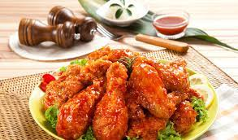

Korean Fried Chicken

Description
Korean fried chicken, usually called chikin in Korea, refers to a variety of fried chicken dishes created in South Korea, including the basic huraideu-chicken and spicy yangnyeom chicken. In South Korea, fried chicken is consumed as a meal, an appetizer, anju, or as an after-meal snack.
So what makes Korean fried chicken so different from its American counterpart? While its American cousin is usually brined and dredged in a flour and buttermilk mixture, Korean fried chicken tends to be more light and crispy with a thin, almost paper-like skin that is not heavily battered.
Ingredients
(Yields Four servings)
Marinade
- 1 pound skinless, boneless chicken thighs, quartered
- 1/2 yellow onion, grated
- 4 cloves garlic, minced
- 1 teaspoon fine salt
- 1/2 teaspoon freshly ground black pepper
Batter
- 3/4 cup cornstarch
- 1/2 cup self-rising flour
- 1 teaspoon white sugar
- 1/2 teaspoon ground black pepper
- 1/4 teaspoon salt
- 1 cup very cold water, or as needed
- oil, or as needed
Steps
- Stir chicken, onion, garlic, fine salt, and 1/2 teaspoon black pepper together in a bowl until chicken is coated. Cover the bowl with plastic warp and refrigerate, 4 hours to overnight.
- Heat oil in a deep-fryer or large saucepan to 340 °F (171 °C
- Whisk cornstarch, flour, sugar, 1/2 teaspoon black pepper, and 1/4 teaspoon salt together in a large bowl. Gradually whisk ice water into flour in until mixture resembles a smooth pancake batter. Transfer chicken to batter and stir to coat chicken completely.
- Working in batches, cook chicken in preheated oil for 4 minutes. Transfer cooked chicken to a cooling rack.
- Increase oil temperature in the deep-fryer or large saucepan to 375 °F (190 °C).
- Working in batches, cook chicken again in hot oil until golden brown and crispy on the outside, 3 to 4 minutes. Transfer to a wire rack to drain.
Author's Note
You can substitute 1/2 cup all-purpose flour plus 3/4 teaspoon baking powder and 1/4 teaspoon salt for the self-rising flour.
Serve with Korean Fried Chicken Sauce.
MENU